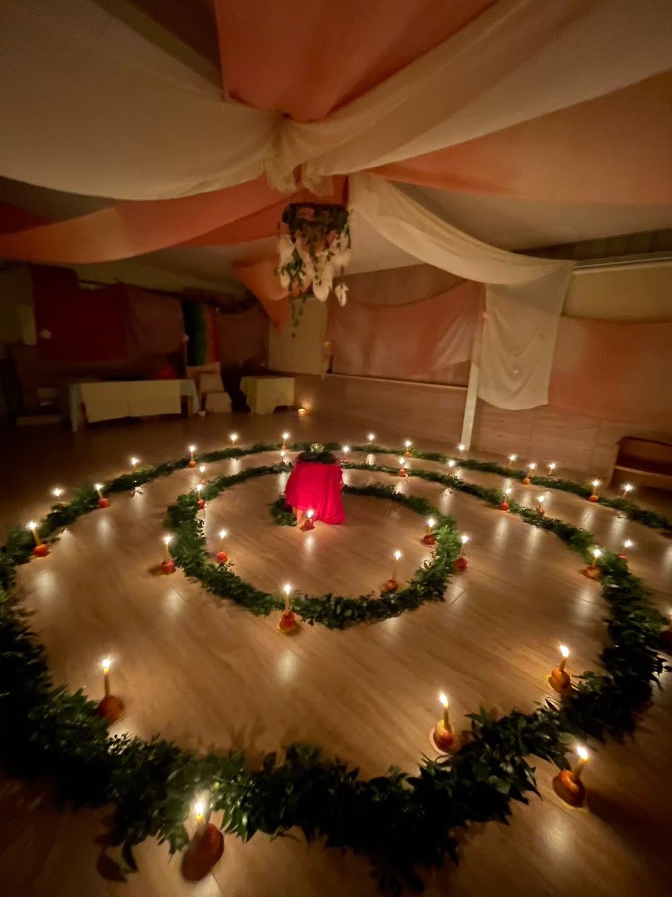
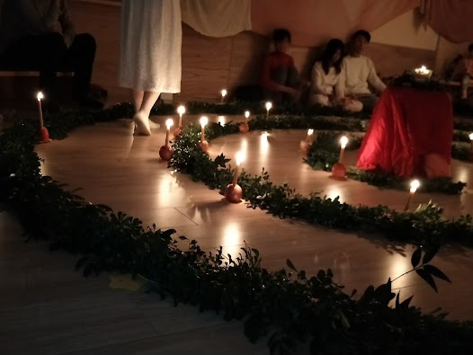
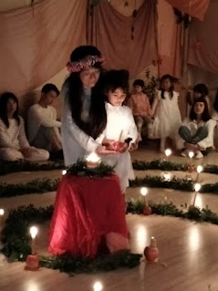

給待降節的詩
待降節的沉思
在最深的夜裡，光悄悄誕生，
像一顆種子，在看不見的土壤裡發芽。
意識在那裡慢慢甦醒，
摸索著昨日與明日的邊界，
隨著這一點光，星光一一被點燃。
於是人學會停下來等待，
在靜默裡收拾散落一地的思緒，
把急促的呼吸，交給較慢的節奏，
像冬天的樹，把葉子還給大地，
在枯寂中，為春天保留力量。
就在這樣的時刻，
光在人的心裡重新誕生，
外在的黑暗，仍舊落在窗外，
卻因這一點點由內而生的亮，
慢慢變得透明、可親。
我們一同站在這一刻：
等待，準備，也悄悄地轉化。
不必大聲宣告什麼，
只要讓心像清晨未被打擾的湖面，
靜靜映出那剛剛升起的光——
世界就在這裡，再一次被更新。
給小小孩們的版本
在很黑、很黑的夜裡，
一小點光醒過來，
像種子在土裡伸伸腰，
偷偷把自己亮起來。
小小的心也慢慢醒來，
睜開眼睛看一看：
昨天跟誰說晚安，
明天要跟誰說早。
天上亮起一顆星，
又一顆，又一顆，
好像對著我們說：
「不怕黑，我在這裡。」
我們輕輕停下腳步，
小聲一點，再小聲一點，
把急急的呼吸放慢，
聽聽心裡咚咚的鼓。
像冬天光禿禿的樹，
把葉子交給大地，
安安靜靜站在那裡，
等著春天來抱一抱。
就在這安靜的時候，
一盞小燈在心裡亮起來，
外面的夜還是黑黑的，
你這裡，已經有光了。
走入螺旋：喚醒內在的虔敬與清明
十二月又悄然來臨了，待降節也隱約開始在我們身體的節奏中悄然醒來。
每年的這個時候我們內在想尋找自我的想望，又更清明了起來。
特別是在這紛雜的現世，靛藍時代的晦暗不明，
更可以藉由燭光花園走螺旋的儀式感，讓孩子及我們內在的虔敬感再度被喚醒。
✨ 今年的特別邀請：摘下許願星星
今年的冬季燭光花園，五芒星星有個特別的想法與邀請：
在燭光花園之後，與孩子們一起摘下許願星星，將心中的光透過星星轉化，為深沉的冬夜帶來指引的方向。
現場需要大家一同維護靜謐的氛圍，若孩子音量過大，請家長輕聲提醒。
讓我們一起安靜地回到自己！好好跟自己對話！也讓孩子的入世之路有燭光相伴，在靜謐中找到前行的勇氣！
活動場次與時間
五芒星星親子共學家庭專場
16:00 ～ 17:30
（15:50 開始報到）
社群朋友場
18:00 ～ 19:00
（17:50 開始報到）
以家庭或個人為單位領取號碼牌依序入場。一次安排 2-3 個家庭進入。
若有 3 歲以下孩童可優先入場，感謝一起守護幼兒的睡眠節奏。
💡 時間備註：實際開始時間將會依據報名人數微調，請以活動前的「行前通知」為準。
📍 活動地點：五芒星星親子共學園（宜蘭縣三星鄉安農九路 560 號）
入場費用與說明
五芒星星共學家庭
孩子本人及父母免費
• 手足另計：每人 300 元
• 摘藤圈許願星星：工本費 200 元（自由加購參與）
社團法人台灣華德福親子共學協會會員
會員本人入場免費
• 摘藤圈許願星星：工本費 200 元（自由加購參與）
非會員 / 社群朋友
入場每人 300 元
以家庭或同行友人為單位入場
• 摘藤圈許願星星：工本費 200 元（自由加購參與）
🪙 現場繳費提醒：煩請準備數目剛好的金額，於服務台報到並繳交費用。走完螺旋後有領取「摘星星牌」的朋友，可至藍貨櫃許願和摘星星。
🕯️ 祝福帶回家：活動後每人可以在服務台領取一組手沾蜂蠟蘋果蠟燭帶回家，將燭光的溫暖延續到家中。
攜手灌溉：新園區重建與支持
共學園區在過往歷經搬遷，在新園區重新落地生根，一切建設捲土重來。
過程得到來自社群夥伴不同形式的大力協助與支持，目前仍舊非常需要持續的陪伴與挹注。
「養育一個孩子需要一個村莊的力量」，讓我們一起協力為下一代、也為自己更好的未來共同努力！
協助協會為社群開展更多服務，朝向共好理想前進。
花園寫真
走入螺旋花園的溫暖與靜謐回憶

青翠的常青枝葉與靜謐螺旋

在冬夜中點燃的蘋果蜂蠟燭光

孩子專注虔敬的步履與心光
名額有限，若有任何疑問或想了解細節，歡迎隨時與我們聯繫交流
主辦單位：社團法人台灣華德福親子共學協會、五芒星星親子共學園
協辦單位：若為自由有限公司